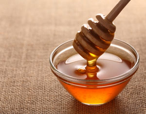
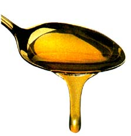
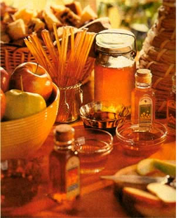

Spring brings a picture-perfect day. You’re enjoying yourself on a well-deserved vacation. Then you fall, a victim of loose gravel. Your leg is a mess. At the local hospital, you’re given a cream to apply two times a day to keep infection at bay. Returning home after a week of pain and aches, your leg isn’t healing as it should. A call to the local herbalist or homeopath, and it’s suggested that you apply honey to the wound. That’s too simple. “How can honey do anything to help this?” you ask. The reply, “Honey not only can heal, it will improve your overall health.”
Sweeteners come in many forms, but none as sweet as honey. Honey remains the one confection offering life-giving qualities not found in any other sweetener. Sugar has more calories. Artificial sweeteners can ultimately do more harm than good. But honey is a natural choice, even for diabetics (in moderation). The bear in the woods knew what he was doing when he fought the bees to get to his favorite sweet stuff.
Native Americans learned from the animals around them. As they watched a bear walk through swarms of bees, pulled like a magnet to the hive despite being stung many times over, they had to observe the pain the animal endured to get the sticky stuff. When they finally got their own hands on honey, they discovered that it not only tasted great, but it healed their bee stings and other cuts, too. The women used it on their faces. Taken for colds, it soothed sore throats. Given to children in the evening, honey was found to keep many an animal skin dry by morning.
Modern creams and antibiotics may help heal, but they often have the disadvantage of killing tissue and causing scabs and scars. But not all of us think to put honey under that Band-Aid or bandage. Results of a three year clinical trial at the University Teaching Hospital in Calabar, Nigeria, showed that unprocessed honey can heal wounds when more modern dressings and antibiotic treatments fail. In 59 patients treated for wounds and external ulcers, honey was effective in all but one case. Topical applications kept sterile wounds sterile until they had time to heal, while infected wounds became sterile within a week. Honey was also shown to remove dead tissue from persistent wounds, helping some patients avoid skin grafts or amputations.
“Honey provides a moist healing environment yet prevents bacterial growth even when wounds are heavily infected,” notes Dr. Peter Molan of the Honey Research Unit at the University of Waikato, New Zealand. “It is a very effective means of quickly rendering heavily infected wounds sterile, without the side effects of antibiotics, and it is even effective against antibiotic resistant strains of bacteria.”
What gives honey its healing capacity? A combination, it seems, of several factors: Honey’s acidity, or pH, is low enough to hinder or prevent the growth of many species of bacteria, although this acidity may be neutralized as honey is diluted, with, for example, body fluids from a cut or wound. Then there’s honey’s osmolarity, or tendency to absorb water from a wound, which deprives bacteria of the moisture they need to thrive. Hydrogen peroxide plays another big part. When honey is diluted (again, say, with fluids from a wound) an enzyme is activated to produce hydrogen peroxide, which, as we know, is a potent antibacterial (who doesn’t have a brown bottle of this stuff in their medicine cabinet?). Honey has also been shown to reduce the inflammation and soothe the pain of deep wounds and burns. And honey dressings won't stick to wounds, since what ends up in contact with the affected area is a solution of honey and fluid that can be easily lifted off or rinsed away. That means no pain when changing dressings, notes Molan, and no tearing away of newly formed tissue.
“Honey is an ideal first-aid dressing material,” he adds, “especially for patients in remote locations, where there could be time for infection to set in before medical treatment is obtained. It is readily available and simple to use.”
But honey’s healing powers reach beyond wounds and burns. There’s also evidence (some scientific, much anecdotal) to suggest that the antibacterial powers of certain honeys, in particular New Zealand’s manuka honey, may be effective against the Helicobacter pylori bacteria, the main culprit in many stomach ulcers. Doctors have yet to prove this, but it certainly wouldn’t hurt to give it a try in the meantime. Beginning and ending your day with a tablespoon of honey on a piece of toast may just calm the fire in your belly.
Some not-so-scientific research has also found that honey can speed alcohol metabolism to sober a person up. The high fructose content may help to relieve that morning-after hangover and the tired feeling that goes along with it. “Honey does not have to be digested before it is absorbed,” notes Dr. Susan Percival of the University of Florida’s Food Science and Human Nutrition Department. “It is already the two simple sugars, fructose and glucose,” which means, explains Percival, that the sugars from honey go directly to the bloodstream and can provide a quick boost when needed. Regular table sugar, on the other hand, is a disaccharide, which must be cleaved in two before digestion.
Along with fructose, honey enzymes enhance the digestive process to relieve indigestion. Daily use of honey creates heat and energy, wards off fatigue, and aids recuperative power.
Eating locally produced honey may also help to minimize the symptoms of hay fever and related pollen allergies, which leave so many of us sniffling and sneezing at this time of the year. John Heinerman, a noted medical anthropologist and author of Heinerman’s Encyclopedia of Healing Herbs and Spices (Prentice Hall, 1996), notes that the best course of treatment is to take one tablespoonful of local honey after each meal, beginning a month before pollen season starts. He also recommends chewing some of the comb between meals. Being a hay fever sufferer himself, Heinerman says, “Although [honey and honey comb] have never actually cured my hay fever as such, I can testify that they have reduced the misery and aggravation of watery eyes and runny nose by at least 80 percent during the allergy season.”
Plagued by worrisome wrinkles? Honey softens and moisturizes for a healthy complexion. Beekeepers’ hands are often noted as being soft and smooth during honey season. To take advantage of honey’s skin softening potential, splash warm water on your face to open the pores. Then apply a thin honey mask, wash it off, and finish with a bit of cold water to the face. Dry skin cells plump up and wrinkles tend to smooth away. Dairy cream, whipped egg white, fresh lemon juice, apple cider vinegar or any fruit juice may be mixed into your honey mask.
Add to all of the above the fact that honey is just plain good for you. It’s chock-full of nutrients, albeit at low levels. Honey is an excellent source of potassium. It also contains thiamin, riboflavin, niacin, pyridoxine and ascorbic acid, not to mention calcium, copper, iron, magnesium, manganese, phosphorous and sodium, too. “Table sugar has no nutrients or antioxidants at all,” notes Percival. “So using honey as a sweetening agent has its advantages.”
Darker honeys contain higher amounts of minerals than lighter honeys. Enzymes also do their part to make honey far more nutritionally complex than other sweeteners. With so much going for honey, isn’t a teaspoonful on your breakfast toast or Band-Aid a simple solution to healing wounds inside and out?
The National Honey Board warns that honey may contain spores that can cause infant botulism in children aged one year and younger. Adults and older children are routinely exposed to botulism spores in dust, soil, honey and other uncooked foods, but are almost never affected by them. In immature infants’ digestive tracts, however, the spores are able to germinate and release a toxin. Symptoms of infant botulism include constipation, lethargy, poor feeding, weak cry, droopy eyelids and, occasionally, respiratory arrest. By the age of 12 months, infants develop a digestive tract mature enough to handle the toxin.
Antibacterial: Apply honey to cuts, scrapes or burns and cover with a clean bandage. Change dressings one to three times daily, as needed. Note: Excessive heat or prolonged exposure to light can rob honey of its antibacterial properties. Always store in a dark, cool place.
Disinfectant: Take several tablespoons of honey daily for internal disinfection.
Nursing salve: Nursing mothers, try covering cracked, sore nipples with honey-soaked gauze to prevent infection.
Sore throats: Many opera singers add honey to a glass of warm milk and sip slowly. This helps soothe the throat.
Insomnia: Mix a half glass of warm water with 2 tablespoons of honey and the juice of a lemon and an orange. The darker the honey, the better this works.
Honey pick-me-up: Combine 2 tablespoons honey, 2 teaspoons pollen, a teaspoon of ginseng, and dried orange peel. Take with a spoon. Asian healers believe that this creates a feeling of total rejuvenation.
Diarrhea: In 8 ounces of water, mix 4 large tablespoons of honey. This works well for bacterial diarrhea. Those with diabetes should be cautious about taking so much honey at one time.
Dieting: Honey’s double action (providing instant energy boost, while maintaining sugar levels for along time) satisfies the hunger for sweets and may keep you feeling fuller longer. For some dieters, this may be good news.
Read more articles about honey for health and other uses.
Does colony collapse disorder have you worried about your honey supply? Read the latest on our Honeybee Decline page.
|
 ISTOCKPHOTO/GABOR IZSO Honey can be an inexpensive - and delicious! - home remedy, and its benefits seem almost endless. |
 EISNG/STOCKFOOD AMERICA Honey remains the one confection offering life-giving qualities not found in any other sweetener. |
 SHAFER/SMITH PHOTOGRAPHY Whether you eat the sweet sticky stuff or apply it externally, honey makes (nearly) everything better - inside and out. |